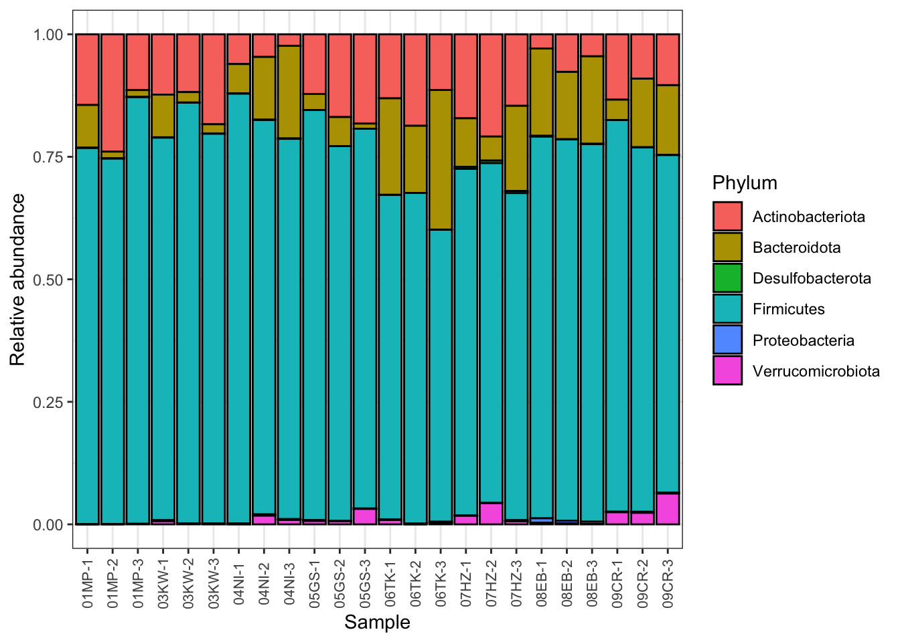

5 Denoise
The DADA2 algorithm makes use of a parametric error model (err) and every amplicon dataset has a different set of error rates. The learnErrors method learns this error model from the data, by alternating estimation of the error rates and inference of sample composition until they converge on a jointly consistent solution. As in many machine-learning problems, the algorithm must begin with an initial guess, for which the maximum possible error rates in this data are used (the error rates if only the most abundant sequence is correct and all the rest are errors).
5.1 Learn the Error Rates
Note: this is the most computationally intensive part of the dada2 pipeline. Depending on your computer, this could take a while.
errF <- learnErrors(ffilt, multithread = TRUE)## 108882480 total bases in 388866 reads from 5 samples will be used for learning the error rates.errR <- learnErrors(rfilt, multithread = TRUE)## 120679000 total bases in 482716 reads from 6 samples will be used for learning the error rates.Visualize the estimated error rates:
plotErrors(errF, nominalQ = TRUE)
The error rates for each possible transition (A→C, A→G, …) are shown. Points are the observed error rates for each consensus quality score. The black line shows the estimated error rates after convergence of the machine-learning algorithm. The red line shows the error rates expected under the nominal definition of the Q-score. Here the estimated error rates (black line) are a good fit to the observed rates (points), and the error rates drop with increased quality as expected. Everything looks reasonable and we proceed with confidence.
5.3 Sample Inference
We are now ready to apply the core sample inference algorithm to the filtered and trimmed sequence data.
dadaFs <- dada(derep_forward, err = errF, multithread = TRUE)## Sample 1 - 75763 reads in 23965 unique sequences.
## Sample 2 - 78537 reads in 24246 unique sequences.
## Sample 3 - 78382 reads in 23641 unique sequences.
## Sample 4 - 91331 reads in 30645 unique sequences.
## Sample 5 - 64853 reads in 19172 unique sequences.
## Sample 6 - 93850 reads in 26654 unique sequences.
## Sample 7 - 72701 reads in 22317 unique sequences.
## Sample 8 - 101260 reads in 29266 unique sequences.
## Sample 9 - 58830 reads in 17721 unique sequences.
## Sample 10 - 64962 reads in 18193 unique sequences.
## Sample 11 - 60386 reads in 16520 unique sequences.
## Sample 12 - 73305 reads in 19548 unique sequences.
## Sample 13 - 58572 reads in 16598 unique sequences.
## Sample 14 - 82501 reads in 21703 unique sequences.
## Sample 15 - 86439 reads in 23852 unique sequences.
## Sample 16 - 68778 reads in 21604 unique sequences.
## Sample 17 - 54017 reads in 15834 unique sequences.
## Sample 18 - 64712 reads in 19398 unique sequences.
## Sample 19 - 71804 reads in 21588 unique sequences.
## Sample 20 - 70809 reads in 21952 unique sequences.
## Sample 21 - 54520 reads in 17251 unique sequences.
## Sample 22 - 72728 reads in 22303 unique sequences.
## Sample 23 - 71862 reads in 21682 unique sequences.
## Sample 24 - 76305 reads in 22284 unique sequences.dadaRs <- dada(derep_reverse, err = errR, multithread = TRUE)## Sample 1 - 75763 reads in 33516 unique sequences.
## Sample 2 - 78537 reads in 34824 unique sequences.
## Sample 3 - 78382 reads in 35233 unique sequences.
## Sample 4 - 91331 reads in 42668 unique sequences.
## Sample 5 - 64853 reads in 27773 unique sequences.
## Sample 6 - 93850 reads in 38981 unique sequences.
## Sample 7 - 72701 reads in 30831 unique sequences.
## Sample 8 - 101260 reads in 42677 unique sequences.
## Sample 9 - 58830 reads in 25258 unique sequences.
## Sample 10 - 64962 reads in 26754 unique sequences.
## Sample 11 - 60386 reads in 26904 unique sequences.
## Sample 12 - 73305 reads in 32839 unique sequences.
## Sample 13 - 58572 reads in 24460 unique sequences.
## Sample 14 - 82501 reads in 30877 unique sequences.
## Sample 15 - 86439 reads in 32166 unique sequences.
## Sample 16 - 68778 reads in 38340 unique sequences.
## Sample 17 - 54017 reads in 23660 unique sequences.
## Sample 18 - 64712 reads in 26271 unique sequences.
## Sample 19 - 71804 reads in 31037 unique sequences.
## Sample 20 - 70809 reads in 29785 unique sequences.
## Sample 21 - 54520 reads in 24771 unique sequences.
## Sample 22 - 72728 reads in 32587 unique sequences.
## Sample 23 - 71862 reads in 31038 unique sequences.
## Sample 24 - 76305 reads in 33480 unique sequences.Inspecting the returned dada-class object:
dadaFs[[1]]## dada-class: object describing DADA2 denoising results
## 454 sequence variants were inferred from 23965 input unique sequences.
## Key parameters: OMEGA_A = 1e-40, OMEGA_C = 1e-40, BAND_SIZE = 16There is much more to the dada-class return object than this (see help(“dada-class”) for some info), including multiple diagnostics about the quality of each denoised sequence variant, but that is beyond the scope of an introductory tutorial.
5.4 Merge reads
We now merge the forward and reverse reads together to obtain the full denoised sequences. Merging is performed by aligning the denoised forward reads with the reverse-complement of the corresponding denoised reverse reads, and then constructing the merged “contig” sequences. By default, merged sequences are only output if the forward and reverse reads overlap by at least 12 bases, and are identical to each other in the overlap region (but these conditions can be changed via function arguments).
merged <- mergePairs(dadaFs, ffilt, dadaRs, rfilt, verbose = TRUE)## 69784 paired-reads (in 468 unique pairings) successfully merged out of 73514 (in 1419 pairings) input.## 72102 paired-reads (in 501 unique pairings) successfully merged out of 76480 (in 1382 pairings) input.## 73148 paired-reads (in 532 unique pairings) successfully merged out of 76580 (in 1477 pairings) input.## 84900 paired-reads (in 547 unique pairings) successfully merged out of 88398 (in 1699 pairings) input.## 59000 paired-reads (in 439 unique pairings) successfully merged out of 62938 (in 1212 pairings) input.## 87633 paired-reads (in 624 unique pairings) successfully merged out of 91169 (in 1855 pairings) input.## 67915 paired-reads (in 487 unique pairings) successfully merged out of 70405 (in 1434 pairings) input.## 95581 paired-reads (in 560 unique pairings) successfully merged out of 98291 (in 1508 pairings) input.## 55017 paired-reads (in 403 unique pairings) successfully merged out of 56793 (in 1098 pairings) input.## 61538 paired-reads (in 292 unique pairings) successfully merged out of 63540 (in 838 pairings) input.## 55905 paired-reads (in 379 unique pairings) successfully merged out of 58724 (in 985 pairings) input.## 68455 paired-reads (in 427 unique pairings) successfully merged out of 71673 (in 1076 pairings) input.## 53615 paired-reads (in 338 unique pairings) successfully merged out of 56832 (in 977 pairings) input.## 76014 paired-reads (in 388 unique pairings) successfully merged out of 80967 (in 1229 pairings) input.## 80182 paired-reads (in 450 unique pairings) successfully merged out of 84620 (in 1373 pairings) input.## 62730 paired-reads (in 322 unique pairings) successfully merged out of 66559 (in 1062 pairings) input.## 49312 paired-reads (in 394 unique pairings) successfully merged out of 51975 (in 1034 pairings) input.## 59235 paired-reads (in 432 unique pairings) successfully merged out of 62456 (in 1162 pairings) input.## 66528 paired-reads (in 479 unique pairings) successfully merged out of 69203 (in 1492 pairings) input.## 65714 paired-reads (in 553 unique pairings) successfully merged out of 68365 (in 1478 pairings) input.## 50220 paired-reads (in 419 unique pairings) successfully merged out of 52188 (in 1141 pairings) input.## 68394 paired-reads (in 497 unique pairings) successfully merged out of 70469 (in 1247 pairings) input.## 66199 paired-reads (in 422 unique pairings) successfully merged out of 69733 (in 1219 pairings) input.## 72039 paired-reads (in 448 unique pairings) successfully merged out of 73808 (in 1108 pairings) input.# Inspect the merger data.frame from the first sample
head(merged[[1]])## sequence
## 1 TGGGGAATATTGCACAATGGGGGAAACCCTGATGCAGCGACGCCGCGTGAAGGAAGAAGTATCTCGGTATGTAAACTTCTATCAGCAGGGAAGATAGTGACGGTACCTGACTAAGAAGCCCCGGCTAACTACGTGCCAGCAGCCGCGGTAATACGTAGGGGGCAAGCGTTATCCGGATTTACTGGGTGTAAAGGGAGCGTAGACGGTGTGGCAAGTCTGATGTGAAAGGCATGGGCTCAACCTGTGGACTGCATTGGAAACTGTCATACTTGAGTGCCGGAGGGGTAAGCGGAATTCCTAGTGTAGCGGTGAAATGCGTAGATATTAGGAGGAACACCAGTGGCGAAGGCGGCTTACTGGACGGTAACTGACGTTGAGGCTCGAAAGCGTGGGGAGCAAACA
## 2 TGGGGAATCTTCCGCAATGGGCGAAAGCCTGACGGAGCAACGCCGCGTGAGTGATGACGGCCTTCGGGTTGTAAAACTCTGTGATCCGGGACGAAAAGGCAGAGTGCGAAGAACAAACTGCATTGACGGTACCGGAAAAGCAAGCCACGGCTAACTACGTGCCAGCAGCCGCGGTAATACGTAGGTGGCAAGCGTTGTCCGGAATTATTGGGCGTAAAGCGCGCGCAGGCGGCTTCCCAAGTCCCTCTTAAAAGTGCGGGGCTTAACCCCGTGATGGGAAGGAAACTGGGAAGCTGGAGTATCGGAGAGGAAAGTGGAATTCCTAGTGTAGCGGTGAAATGCGTAGAGATTAGGAAGAACACCGGTGGCGAAGGCGACTTTCTGGACGAAAACTGACGCTGAGGCGCGAAAGCGTGGGGAGCAAACA
## 3 TGGGGAATATTGCACAATGGGCGCAAGCCTGATGCAGCGACGCCGCGTGCGGGATGACGGCCTTCGGGTTGTAAACCGCTTTTGACTGGGAGCAAGCCCTTCGGGGTGAGTGTACCTTTCGAATAAGCACCGGCTAACTACGTGCCAGCAGCCGCGGTAATACGTAGGGTGCAAGCGTTATCCGGAATTATTGGGCGTAAAGGGCTCGTAGGCGGTTCGTCGCGTCCGGTGTGAAAGTCCATCGCTTAACGGTGGATCCGCGCCGGGTACGGGCGGGCTTGAGTGCGGTAGGGGAGACTGGAATTCCCGGTGTAACGGTGGAATGTGTAGATATCGGGAAGAACACCAATGGCGAAGGCAGGTCTCTGGGCCGTCACTGACGCTGAGGAGCGAAAGCGTGGGGAGCGAACA
## 4 TGGGGAATCTTGCGCAATGGGGGGAACCCTGACGCAGCGACGCCGCGTGCGGGACGGAGGCCTTCGGGTCGTAAACCGCTTTCAGCAGGGAAGAGTCAAGACTGTACCTGCAGAAGAAGCCCCGGCTAACTACGTGCCAGCAGCCGCGGTAATACGTAGGGGGCGAGCGTTATCCGGATTCATTGGGCGTAAAGCGCGCGTAGGCGGCCCGGCAGGCCGGGGGTCGAAGCGGGGGGCTCAACCCCCCGAAGCCCCCGGAACCTCCGCGGCTTGGGTCCGGTAGGGGAGGGTGGAACACCCGGTGTAGCGGTGGAATGCGCAGATATCGGGTGGAACACCGGTGGCGAAGGCGGCCCTCTGGGCCGAGACCGACGCTGAGGCGCGAAAGCTGGGGGAGCGAACA
## 5 TGGGGAATATTGCACAATGGGGGAAACCCTGATGCAGCGACGCCGCGTGGAGGAAGAAGGTCTTCGGATTGTAAACTCCTGTTGTTGAGGAAGATAATGACGGTACTCAACAAGGAAGTGACGGCTAACTACGTGCCAGCAGCCGCGGTAAAACGTAGGTCACAAGCGTTGTCCGGAATTACTGGGTGTAAAGGGAGCGCAGGCGGGCGATCAAGTTGGAAGTGAAATCCATGGGCTCAACCCATGAACTGCTTTCAAAACTGGTCGTCTTGAGTAGTGCAGAGGTAGGCGGAATTCCCGGTGTAGCGGTGGAATGCGTAGATATCGGGAGGAACACCAGTGGCGAAGGCGGCCTACTGGGCACCAACTGACGCTGAGGCTCGAAAGTGTGGGTAGCAAACA
## 6 TGGGGAATATTGCACAATGGGGGAAACCCTGATGCAGCGACGCCGCGTGGAGGAAGAAGGTCTTCGGATTGTAAACTCCTGTTGTTGGGGAAGATAATGACGGTACCCAACAAGGAAGTGACGGCTAACTACGTGCCAGCAGCCGCGGTAAAACGTAGGTCACAAGCGTTGTCCGGAATTACTGGGTGTAAAGGGAGCGCAGGCGGGAAGACAAGTTGGAAGTGAAATCTATGGGCTCAACCCATAAACTGCTTTCAAAACTGTTTTTCTTGAGTAGTGCAGAGGTAGGCGGAATTCCCGGTGTAGCGGTGGAATGCGTAGATATCGGGAGGAACACCAGTGGCGAAGGCGGCCTACTGGGCACCAACTGACGCTGAGGCTCGAAAGTGTGGGTAGCAAACA
## abundance forward reverse nmatch nmismatch nindel prefer accept
## 1 4947 1 1 128 0 0 1 TRUE
## 2 4839 2 5 103 0 0 1 TRUE
## 3 4766 3 2 119 0 0 1 TRUE
## 4 3659 4 11 127 0 0 1 TRUE
## 5 3492 6 4 128 0 0 1 TRUE
## 6 2743 7 6 128 0 0 1 TRUEThe merged object is a list of data.frames from each sample. Each data.frame contains the merged $sequence, its $abundance, and the indices of the $forward and $reverse sequence variants that were merged. Paired reads that did not exactly overlap were removed by mergePairs, further reducing spurious output.
Considerations: Most of your reads should successully merge.If that is not the case upstream parameters may need to be revisited: Did you trim away the overlap between your reads?
5.5 Construct sequence table
We can now construct an amplicon sequence variant table (ASV) table, a higher-resolution version of the OTU table produced by traditional methods.
seqtab <- makeSequenceTable(merged)
dim(seqtab)## [1] 24 5199rownames(seqtab) <- basename(sample.names)
# Inspect distribution of sequence lengths
table(nchar(getSequences(seqtab)))##
## 282 300 315 323 365 366 373 380 385 386 401 402 403 404 405 406
## 1 1 1 2 1 1 2 1 1 1 264 2313 510 210 282 24
## 407 408 409 410 411 412 418 419 420 421 422 423 424 425 426 427
## 116 44 108 15 99 3 2 3 6 54 406 12 1 2 197 368
## 428 434 439 463 470
## 144 1 1 1 1The sequence table is a matrix with rows corresponding to (and named by) the samples, and columns corresponding to (and named by) the sequence variants.
5.5.1 Exercise
Are these sequences the length that you expect? How are the reads concentrated in the merged sequence lengths? Plot the distribution of sequence lengths to explore. Something like the plot shown below.

5.5.2 Exercise
Sequences that are much longer or shorter than expected may be the result of non-specific priming. Remove the non-target-length sequences from your sequence table. This is analogous to “cutting a band” in-silico to get amplicons of the targeted length.
After size selection:
dim(seqtab)## [1] 24 5185table(nchar(getSequences(seqtab)))##
## 401 402 403 404 405 406 407 408 409 410 411 412 418 419 420 421
## 264 2313 510 210 282 24 116 44 108 15 99 3 2 3 6 54
## 422 423 424 425 426 427 428 434 439
## 406 12 1 2 197 368 144 1 15.6 Remove Chimeras
The core dada method corrects substitution and indel errors, but chimeras remain. Fortunately, the accuracy of sequence variants after denoising makes identifying chimeric ASVs simpler than when dealing with fuzzy OTUs. Chimeric sequences are identified if they can be exactly reconstructed by combining a left-segment and a right-segment from two more abundant “parent” sequences.
seqtab.nochim <- removeBimeraDenovo(seqtab,
method="consensus",
multithread=TRUE,
verbose=TRUE)## Identified 3984 bimeras out of 5185 input sequences.dim(seqtab.nochim)## [1] 24 1201sum(seqtab.nochim)/sum(seqtab)## [1] 0.9463682The frequency of chimeric sequences varies substantially from dataset to dataset, and depends on on factors including experimental procedures and sample complexity.
Consideration: Most of your reads should remain after chimera removal (it is not uncommon for a majority of sequence variants to be removed though). If most of your reads were removed as chimeric, upstream processing may need to be revisited. In almost all cases this is caused by primer sequences with ambiguous nucleotides that were not removed prior to beginning the DADA2 pipeline.
5.7 Track reads through the pipeline
As a final check of our progress, we’ll look at the number of reads that made it through each step in the pipeline:
getN <- function(x) sum (getUniques(x))
summary_tab <- data.frame(row.names=basename(sample.names),
Input=out[,1],
Filtered=out[,2],
Denoised=sapply(dadaFs, getN),
Merged=sapply(merged, getN),
Non.Chimeric=rowSums(seqtab.nochim),
Total.Perc.Remaining = round(rowSums(seqtab.nochim)/out[,1]*100 ,1))
## Write this table to output
write.table(summary_tab, file.path(path, "reads_tracked.txt"))